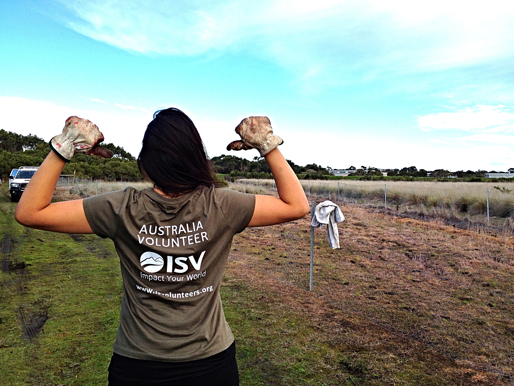

About US
How we started.
Animals Australia was formed in 1980. We were originally called the Australian Federation of Animal Societies (AFAS). Co-Founders Professor Peter Singer and Dr Christine Townend recognised the need to unite the many animal protection groups in Australia to provide a united and strong voice on behalf of animals. A primary activity of the first decade of 'AFAS' was lobbying for and then actively contributing to the Senate Select Committee on Animal Welfare (its 11 reports are still key documents). In 1986 the federation introduced 'individual membership' in addition to the society membership structure, and also accepted New Zealand member groups; changing our name to Australian and New Zealand Federation of Animal Societies (ANZFAS). In the late 1990s we reverted to Australian groups only, and the name 'Animals Australia' was adopted. The organisation now uniquely undertakes two interwoven roles — as a peak body representing a large number of grass roots groups, and a campaign-focussed organisation working to raise community awareness of animal cruelty and promote reform.

Our Gallery
If you are still not sure, what we are doing, then have a look how our amazing volunteers help animals.